창원 블랙앤화이트 가족사진 — 온 가족이 검정과 흰색으로 서는 날
2026-10-23 발행
창원 블랙앤화이트 가족사진은 색을 하나로 줄이는 촬영입니다. 모두가 검정과 흰색만 입고 서면, 처음 보는 사진처럼 낯설고 오래 보는 사진처럼 편안해집니다. 색이 줄어든 만큼 사람의 표정과 자세가 커집니다.
가족사진을 찍을 때 가장 많이 나오는 고민이 "무슨 옷을 맞춰 입을까"입니다. 블랙앤화이트는 그 고민을 없애 줍니다. 검정과 흰색, 두 가지만 정하면 되니까요. 대신 그 두 색 안에서 누가 무엇을 입을지는 정해야 합니다. 이 배분이 이 촬영의 절반입니다.
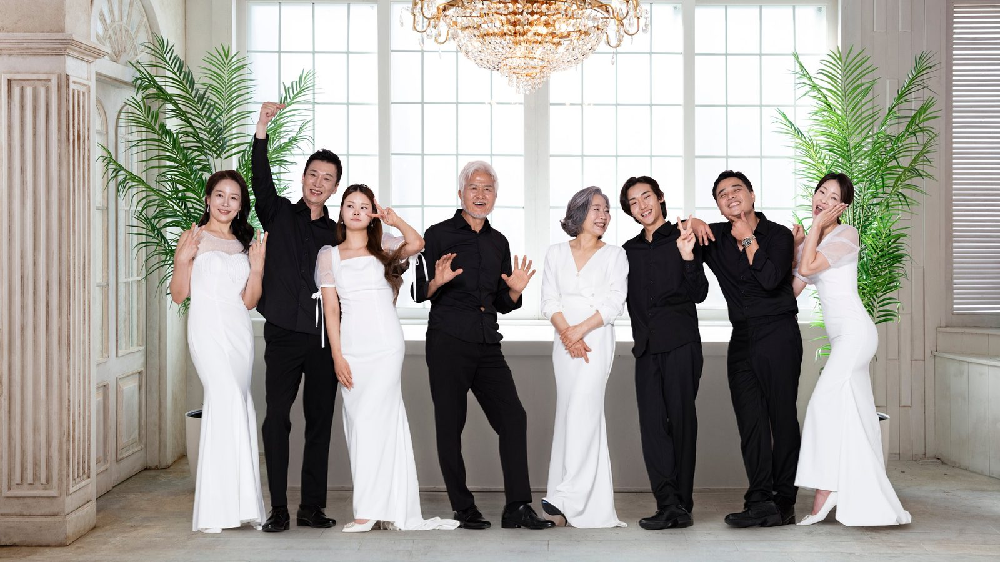
첫 자리는 전원입니다. 큰 창으로 빛이 들어오는 스튜디오에서 여덟 명이 섰습니다. 검정 수트를 입은 사람이 넷, 흰 드레스를 입은 사람이 넷. 이렇게 반으로 나누면 사진이 무겁지도 가볍지도 않게 균형을 잡습니다.
블랙앤화이트 가족사진은 어떤 옷을 준비하나요? 남성은 검정 수트에 흰 셔츠와 나비넥타이, 여성은 흰 드레스나 검정 원피스입니다. 실크와 새틴처럼 빛을 받는 천이 사진에서 유리합니다. 무광 면 소재는 빛을 먹어서 검정이 회색으로 보일 수 있습니다.
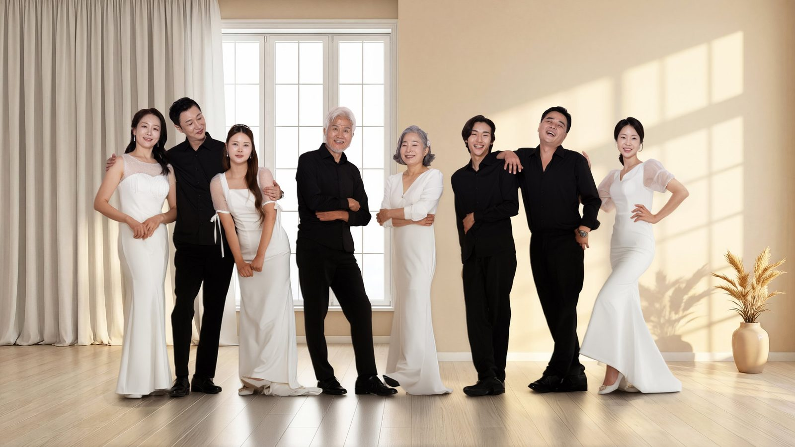
두 번째는 서로를 보는 자리입니다. 정면을 보고 있으면 어깨에 힘이 들어갑니다. 옆 사람을 보게 하면 그 힘이 빠집니다. 이 자리에서는 제가 "옆 사람에게 오늘 아침에 뭐 했는지 물어보세요"라고 합니다. 대화가 시작되면 표정이 자연스러워집니다.
세대가 섞여 있을 때 가장 좋은 점은 대비입니다. 어르신의 흰 머리와 검정 수트, 아이의 흰 원피스와 검정 리본. 같은 색을 입고 있어도 나이가 다르면 사진이 깊어집니다. 그래서 이 촬영은 세 세대가 함께 오실 때 가장 잘 나옵니다.
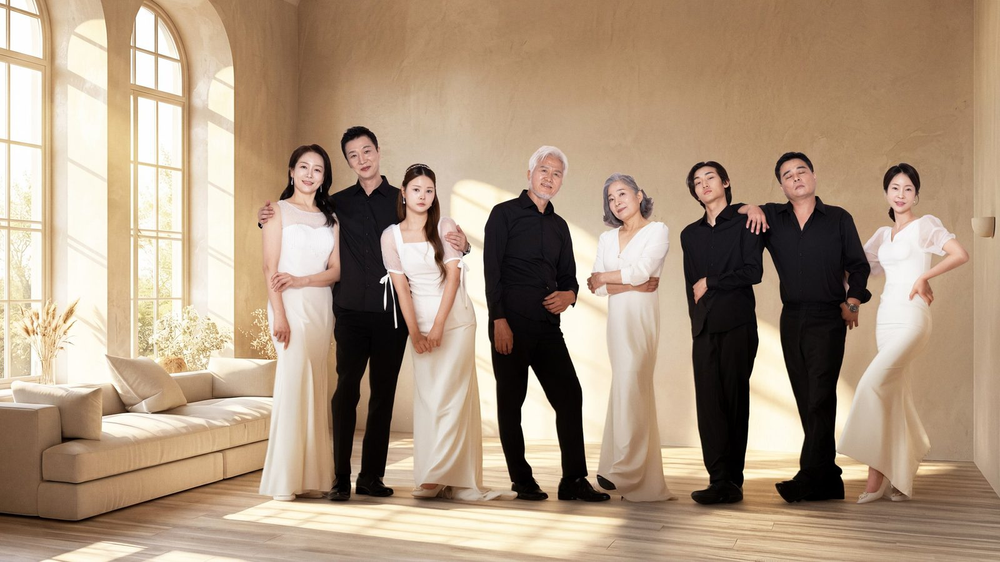
세 번째는 앉은 자리입니다. 어르신을 가운데 앉히고 젊은 세대가 뒤에 서면 사진에 중심이 생깁니다. 이때 앉은 사람의 무릎 높이와 선 사람의 허리 높이를 맞추면 두 줄이 한 덩어리로 보입니다. 의자 높이를 바꿔 가며 맞춥니다.
야외에서도 찍습니다. 노란 벽 앞, 초록 정원, 돌계단. 검정과 흰색은 어떤 배경 앞에서도 튀지 않고 오히려 배경을 정리해 줍니다. 특히 노란 벽은 검정 수트를 살리고 흰 드레스를 밝게 만듭니다. 야외 촬영은 스튜디오에서 차로 십여 분 거리입니다.
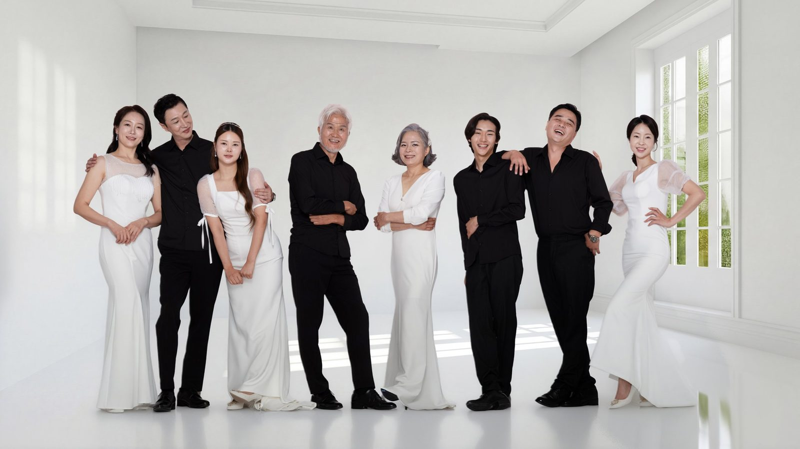
네 번째는 긴 줄입니다. 여덟 명을 한 줄로 세우면 사진이 옆으로 길어집니다. 이 배치는 사진첩의 가로 페이지에 넣기 좋습니다. 다만 양 끝 사람의 얼굴이 작아지므로, 가운데 두 사람에게 시선이 모이게 조명을 잡습니다.
아이들은 이 촬영에서 특히 빛이 납니다. 흰 원피스를 입은 아이가 검정 수트 사이에 서면 사진의 리듬이 생깁니다. 아이가 가만있기 어려우면 뛰어도 됩니다. 뛰는 아이를 찍은 컷이 나중에 가장 자주 꺼내 보는 사진이 됩니다.
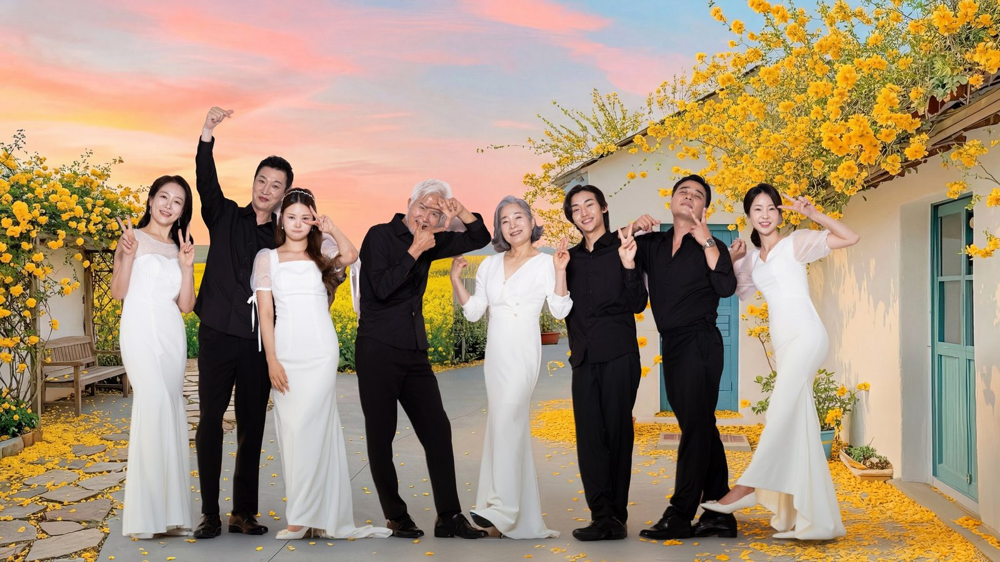
다섯 번째는 야외 전원 컷입니다. 해가 지기 전 한 시간이 가장 좋습니다. 이 시간에는 빛이 낮게 들어와서 얼굴에 그림자가 지지 않습니다. 노을이 시작되면 하늘이 분홍으로 물들고, 검정 수트가 그 앞에서 실루엣처럼 남습니다.
부모님만 따로 찍는 자리도 있습니다. 이 자리는 자녀들이 빠지고 두 사람만 남습니다. 블랙앤화이트에서 이 컷이 가장 좋은 이유는, 두 사람이 같은 색을 입고 서 있을 때 부부라는 것이 가장 분명하게 보이기 때문입니다.
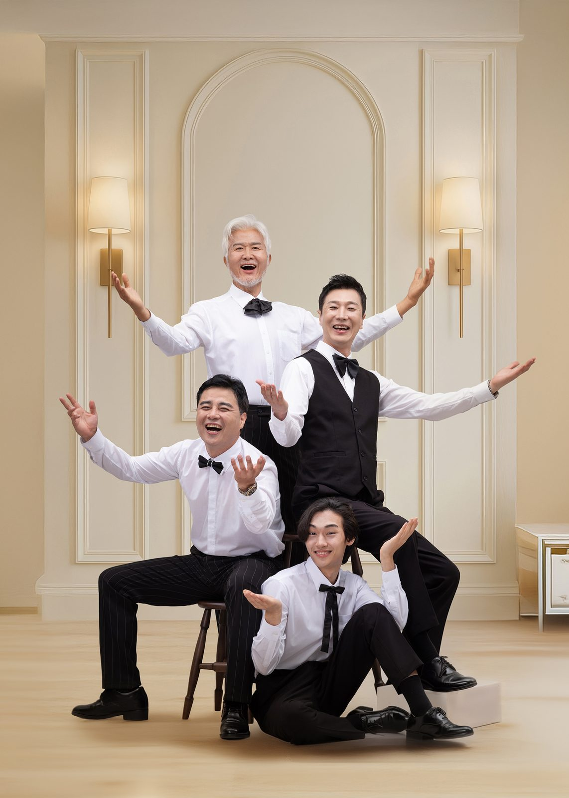
여섯 번째는 부모님 중심 자리입니다. 어머니가 의자에 앉고 아버지가 뒤에 서고, 자녀가 양옆으로 섭니다. 오래된 배치지만 지금도 가장 안정적으로 읽힙니다. 이 자리에서는 어머니의 손 위치를 꼭 봅니다. 무릎 위에 두면 단정하고, 아버지 손을 잡으면 따뜻해집니다.
창원에서 이 촬영은 언제 하는 게 좋을까요? 결혼기념일이나 회갑·칠순처럼 가족이 모이는 날이 정해져 있다면 그날에 맞추면 됩니다. 정해진 날이 없다면 계절로 정하시는 편이 좋습니다. 야외 컷을 원하시면 초록이 짙은 초여름이나 단풍이 드는 가을이 좋습니다.
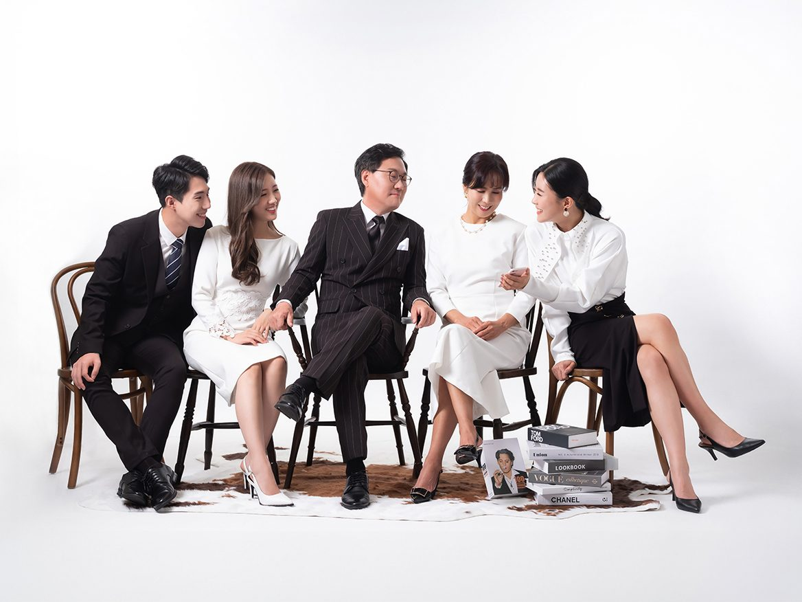
일곱 번째는 정면 자리입니다. 이 자리는 장수를 많이 찍습니다. 같은 구도로 여러 장을 찍어 두면 나중에 한 장을 고르기 쉽습니다. 저는 이 자리에서 표정을 만들지 말고 그냥 앞을 보시라고 합니다. 카메라를 의식하지 않는 얼굴이 가장 오래 남습니다.
드레스는 의상실에서 대여합니다. 키와 체형에 따라 라인이 달라지므로 두세 벌을 입어 보고 정하시는 편이 좋습니다. 검정 수트는 사이즈만 맞으면 되지만, 흰 드레스는 어깨선과 허리선이 사진에서 크게 보입니다.
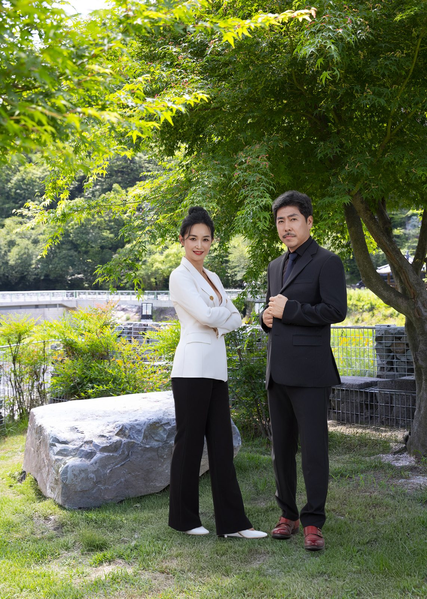
여덟 번째는 야외 부부 컷입니다. 가족이 다 찍은 뒤 두 사람만 남겨서 찍습니다. 이 컷은 자녀들이 옆에서 지켜보는 것이 좋습니다. 부모님이 서로에게 하는 표정을 자녀가 처음 보는 경우가 많기 때문입니다.
가격과 소요 시간, 촬영본 전달 방식은 인원과 의상 수에 따라 다릅니다. 예약하실 때 인원을 알려 주시면 정확한 금액과 시간을 안내드립니다. [확인 필요] 액자를 함께 제작하실 경우 제작 기간도 그때 알려 드립니다.
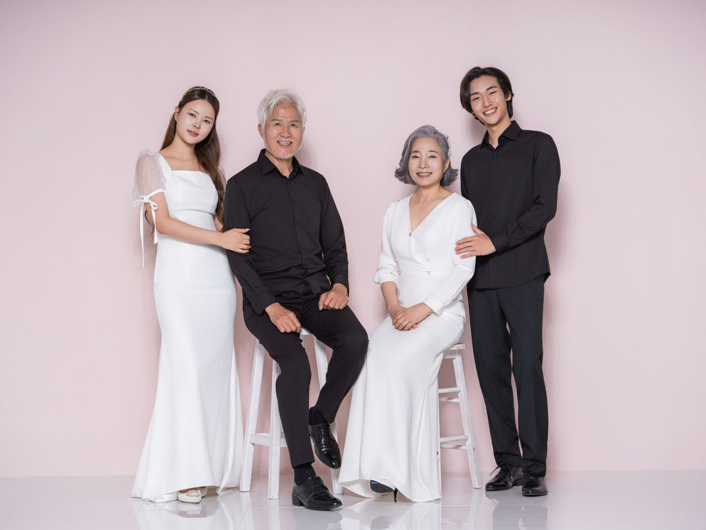
아홉 번째는 서로 팔을 잡는 자리입니다. 이 자리는 대형이 클수록 잘 나옵니다. 여덟 명이 서로 팔을 잡으면 한 줄의 선이 생기고, 그 선이 사진을 하나로 묶습니다. 이때 발을 살짝 벌리게 하면 안정적으로 보입니다.
사진을 고를 때는 표정보다 눈을 먼저 봅니다. 눈이 사진 밖을 보고 있으면 그 컷은 아무리 웃고 있어도 쓰지 않습니다. 반대로 눈이 안으로, 가족을 향해 있으면 조금 흐트러진 자세라도 좋은 사진이 됩니다.
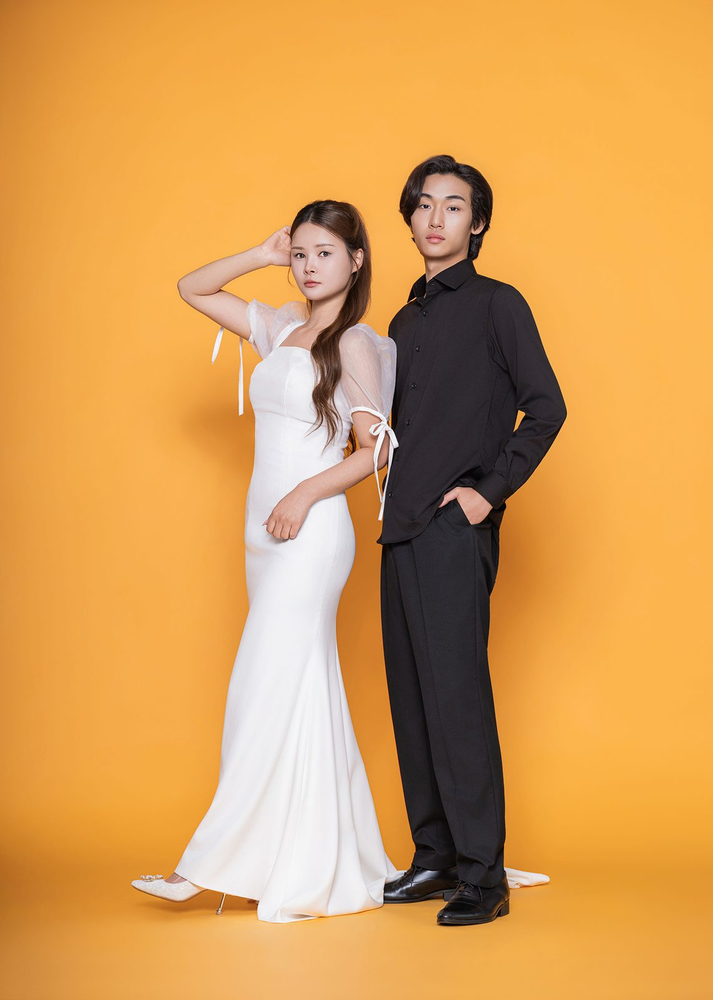
열 번째는 색 배경입니다. 흰 배경과 회색 배경, 그리고 노란 배경. 같은 옷으로 세 배경을 찍으면 사진첩에서 세 가지 분위기가 됩니다. 노란 배경은 특히 젊은 세대가 좋아하시고, 회색 배경은 어르신이 좋아하십니다.
블랙앤화이트 가족사진은 옷을 맞추는 촬영이지만, 결국 남는 것은 사람입니다. 색을 빼고 나면 그 사람이 어떤 눈으로 가족을 보고 있었는지가 사진에 남습니다. 저는 그 눈을 찍으려고 이 자리를 오래 준비합니다.
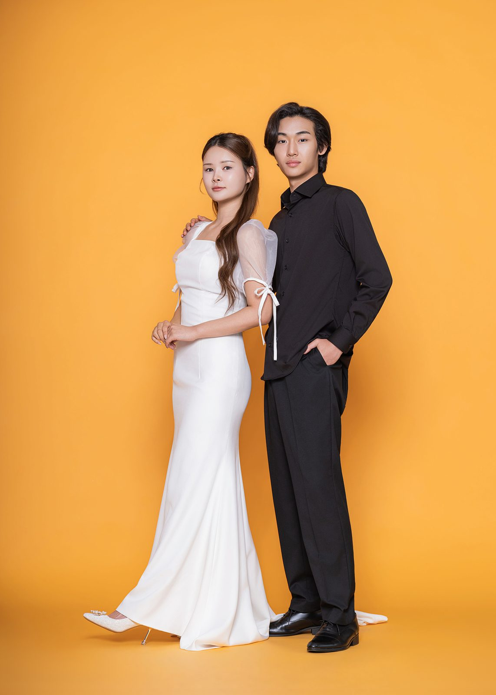
열한 번째는 손을 잡는 자리입니다. 이 자리에서는 손을 어떻게 잡을지 정해 드리지 않습니다. 평소에 잡던 방식으로 잡으시라고 합니다. 손가락을 깍지 끼는 부부, 손등을 덮는 부부, 팔짱을 끼는 부부. 그 방식이 그 집의 방식입니다.
먼저 배경을 정합니다. 흰 배경은 사진이 가장 깨끗하고, 회색 배경은 옷의 질감이 살고, 색 배경은 기분이 밝아집니다. 여덟 명 기준으로 세 배경을 오가며 찍으면 한 시간 반이 걸립니다. 어느 배경을 크게 인화할지 미리 정해 두시면 고르는 시간이 줄어듭니다.
가족 사이에 서먹한 사이가 있어도 괜찮습니다. 오히려 그런 집의 사진이 더 좋게 나오는 경우가 많습니다. 자리를 정해 드리고 같은 방향을 보게 하면, 그 몇 분 동안은 모두가 같은 곳을 봅니다. 사진은 그 몇 분을 남기는 일입니다.
이 글의 사진은 촬영 스타일을 보여 드리기 위한 예시 이미지입니다. 실제 고객의 사진이 아닙니다.
사랑이야기 스튜디오 창원점 / 주소: 경남 창원시 성산구 원이대로 652, 상남동 롯데빌딩 2층 / 전화: 창원점 055-287-8022, 의령점 055-574-3706 / 홈페이지: lovestorykim.com / 인스타그램: @lovestorychangwon / 운영: 김작가
자주 묻는 질문
Q. 검정 옷이 없으면 어떻게 하나요?
A. 검정 수트와 흰 드레스는 의상실에서 대여합니다. 개인 옷을 가져오셔도 되지만, 사진에서는 광택이 있는 소재가 유리합니다. 사이즈는 예약할 때 알려 주시면 미리 준비합니다.
Q. 아이가 검정 옷을 입어도 되나요?
A. 됩니다. 다만 아이는 흰색이나 아이보리를 입히는 편이 사진에서 밝게 살아납니다. 리본이나 나비넥타이로 검정을 한 점 넣으면 전체와 어울립니다.
Q. 야외 촬영은 따로 예약해야 하나요?
A. 같은 날 이어서 진행하는 경우가 많습니다. 다만 날씨에 따라 일정이 바뀔 수 있어서 예약하실 때 야외 여부를 함께 말씀해 주시면 순서를 조정해 드립니다.

오시는 곳
사랑이야기창원점
- 주소 경남 창원시 성산구 원이대로 652, 상남동 롯데빌딩 2층
- 전화 055-287-8022
- 영업시간 오전 10:00 ~ 오후 7:00
- 예약 전화 상담 · 카카오톡 채널
- 주차 건물 지하 주차장
김작가사진이야기 의령
- 주소 경남 의령군 궁류면 청정로 1188
- 전화 055-574-3706
- 영업시간 오전 10:00 ~ 오후 7:00
- 예약 전화 상담 · 카카오톡 채널
- 주차 전용 주차장
이 글에 한마디
댓글창을 준비하고 있습니다. 그동안 궁금한 점은 카카오채널로 남겨 주시면 바로 답변드립니다.
카카오채널로 한마디 남기기